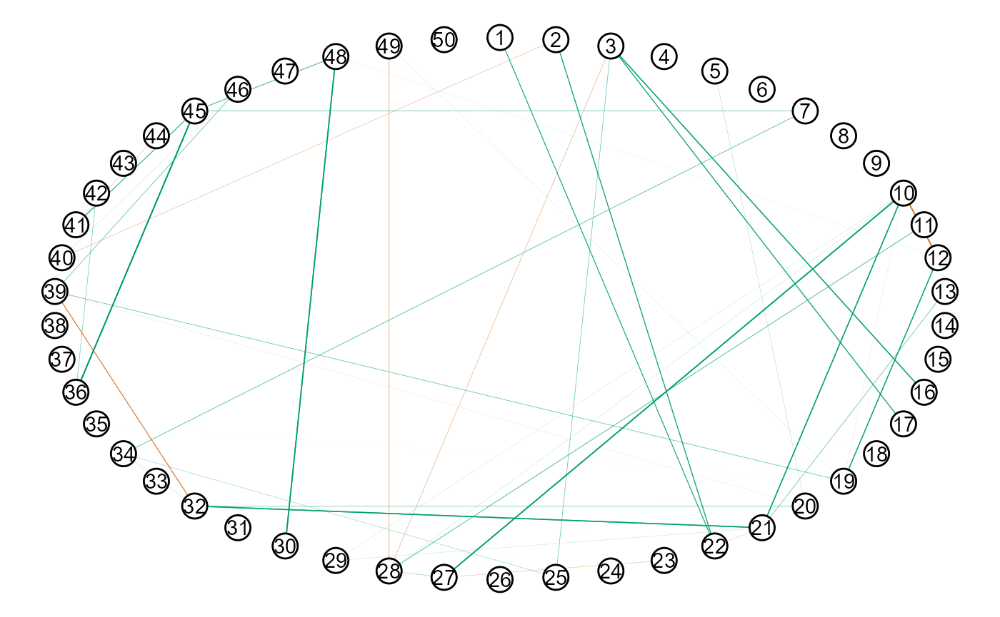
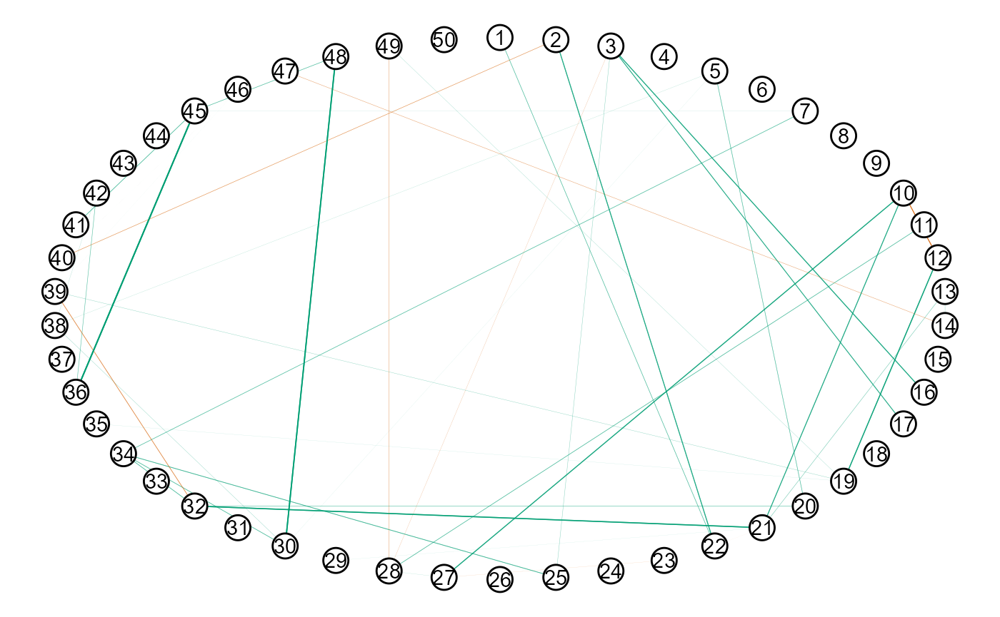

GGMncv is set up for low-dimensional settings, that is, when the number of observations (\(n\)) is much greater than the number of nodes (\(p\)). This is perhaps not typical in the Gaussian graphical modeling literature, and is a direct result of my (the author of GGMncv) field encountering low-dimensional data most often (see for example Williams et al. 2019; Williams and Rast 2020). As a result, the defaults are honed in for low-dimensional data!
Of course, GGMncv can readily be used for high-dimensional data. In what follows, I highlight several issues that may arise, in addition to solutions to overcome those issues.
By default, GGMncv uses the sample based (inverse) covariance matrix for the initial values, which is needed for employing nonconvex regularization. When \(p > n\), GGMncv will produce an error because the sample based (inverse) covariance matrix cannot be inverted in this situation.
For example, notice the error when running the following code:
library(GGMncv)
# p > n
main <- gen_net(p = 50,
edge_prob = 0.05)
y <- MASS::mvrnorm(n = 49,
mu = rep(0, 50),
Sigma = main$cors)
fit <- ggmncv(cor(y), n = nrow(y))
#> Error in solve.default(R): system is computationally singular: reciprocal condition number = 1.56126e-18The solution is to provide an function for the initial matrix. To this end, GGMncv includes the function lediot_wolf which is a shrinkage estimator (Ledoit and Wolf 2004). It is important to note that any function can be used, so long as it return the inverse correlation matrix.
fit <- ggmncv(cor(y), n = nrow(y),
penalty = "atan",
progress = FALSE,
initial = ledoit_wolf, Y = y)Notice the Y = y, which is used internally to pass additional arguments via ... to the function provided in initial.
The conditional dependence structure can then be plotted with

Here is an example of providing a function.
initial_ggmncv <- function(y, ...){
Rinv <- corpcor::invcor.shrink(y, verbose = FALSE)
return(Rinv)
}
fit2 <- ggmncv(cor(y), n = nrow(y),
penalty = "atan",
progress = FALSE,
initial = initial_ggmncv, y = y)
plot(get_graph(fit2),
node_size = 5)
Perhaps it is of interest to compare performance, given that different initial values were used.
# ledoit and wolf
score_binary(estimate = fit$adj,
true = main$adj,
model_name = "lw")
#> measure score model_name
#> 1 specificity 0.9922680 lw
#> 2 sensitivity 0.1147541 lw
#> 3 precision 0.4375000 lw
#> 4 recall 0.1147541 lw
#> 5 f1_score 0.1818182 lw
#> 6 mcc 0.2050416 lw
# Shaffer and strimmer
score_binary(estimate = fit2$adj,
true = main$adj,
model_name = "ss")
#> measure score model_name
#> 1 specificity 0.9957045 ss
#> 2 sensitivity 0.1147541 ss
#> 3 precision 0.5833333 ss
#> 4 recall 0.1147541 ss
#> 5 f1_score 0.1917808 ss
#> 6 mcc 0.2439607 ssPerhaps a trickier situation is when the covariance matrix can be inverted, but it is still ill-conditioned. This can occur when \(p\) approaches but does not exceed \(n\). Here performance can be very bad.
# p -> n
main <- gen_net(p = 50,
edge_prob = 0.05)
y <- MASS::mvrnorm(n = 60,
mu = rep(0, 50),
Sigma = main$cors)
fit <- ggmncv(cor(y), n = nrow(y),
penalty = "atan",
progress = FALSE)
score_binary(estimate = fit$adj,
true = main$adj)
#> measure score
#> 1 specificity 0.16924399
#> 2 sensitivity 0.93442623
#> 3 precision 0.05566406
#> 4 recall 0.93442623
#> 5 f1_score 0.10506912
#> 6 mcc 0.06089020This is extremely problematic because there was no error, and the performance was terrible (note: 1 - specificity = the false positive rate).
One solution is again to provide a function to initial.
fit <- ggmncv(cor(y), n = nrow(y),
progress = FALSE,
penalty = "atan",
initial = ledoit_wolf, Y = y)
score_binary(estimate = fit$adj,
true = main$adj)
#> measure score
#> 1 specificity 0.9656357
#> 2 sensitivity 0.3114754
#> 3 precision 0.3220339
#> 4 recall 0.3114754
#> 5 f1_score 0.3166667
#> 6 mcc 0.2815270An additional solution is to use \(L_1\)-regularization, i.e.,
fit_l1 <- ggmncv(cor(y), n = nrow(y),
progress = FALSE,
penalty = "lasso")
score_binary(estimate = fit_l1$adj,
true = main$adj)
#> measure score
#> 1 specificity 0.99828179
#> 2 sensitivity 0.01639344
#> 3 precision 0.33333333
#> 4 recall 0.01639344
#> 5 f1_score 0.03125000
#> 6 mcc 0.06458476A quick comparison of KL-divergence